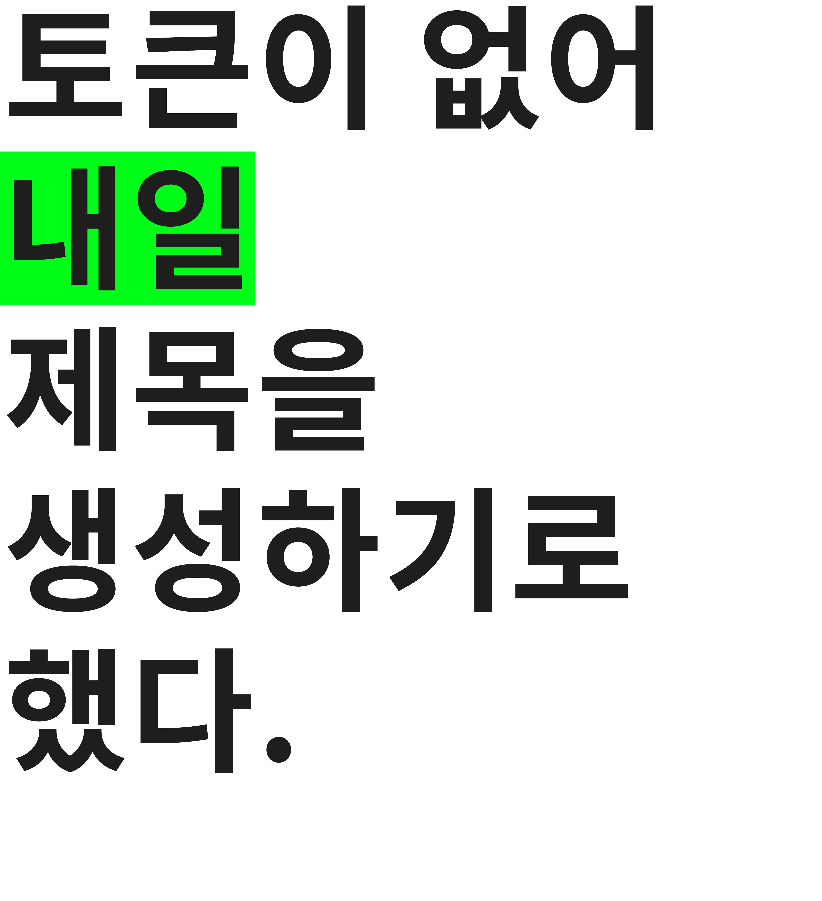

[토큰이 없어 내일 제목을 생성하기로 했다]
2026.11.02 - 2026.11.16
서울특별시 성북구 정릉로 77 국민대학교 예술관 2층 국민 아트스페이스
77 Jeongneung-ro, Seongbuk-gu, Seoul
Kookmin University College Of Arts 2F, Kookmin Artspace
오늘 우리는 생각하고 만드는 일마저 기술과 나누어 갖는 시대에 서 있다. AI는 답을 생성하고, 이름을 붙이고, 생각의 방향까지 제안한다. 그렇다면 이러한 시대에 인간의 사유는 어떻게 계속될 수 있을까?
‘토큰이 없어 내일 제목을 생성하기로 했다’는 제목은 AI로 전시명을 지으려던 시도를 암시하는 한편, 역설적으로 사람이 직접 지은 제목임을 드러낸다. 사유의 영역, 창작의 영역까지도 AI에게 위임하는 오늘, 이 제목은 인간의 사유가 어떻게 계속되는지를 되묻게 한다.
토큰은 하나의 생각을 이어가기 위한 조건이자 가능성이다. 이는 AI의 기술적 단위로서가 아니라 새로운 생각을 이끄는 조건으로, 우리를 완성된 결과가 아닌 계속되는 과정 위에 서 있게 한다. 졸업이라는 하나의 지점에 다다랐지만, 이들이 제시하는 작업은 마침표가 아닌 또 다른 질문의 시작이다. 완성되지 않았기에 다시 시작할 수 있고, 아직 도착하지 않았기에 더 먼 가능성을 향해 나아갈 수 있다.
곧 동이 틀 새벽과 같은 이곳에서 각자의 사유가 피워낸 고유한 가능성들을 즐겁게 마주하길 바란다.
참여작가
강민지 강제완 강해빈 김류나 김수홍 박지훈 박희주 연채민 염은진 이다혜 이아령 이지안 이지예 이채영 장아란 장혜란 전서희 정민선 전희원 조여영 조혜원 채시원
웹사이트 제작 · 강예빈
WORKS
ARCHIVES
COMMENT
CONTACT
조여영
Yeoyeong Cho
무집착을 향한 집착
익명님, 방명록을 생성해볼까요?